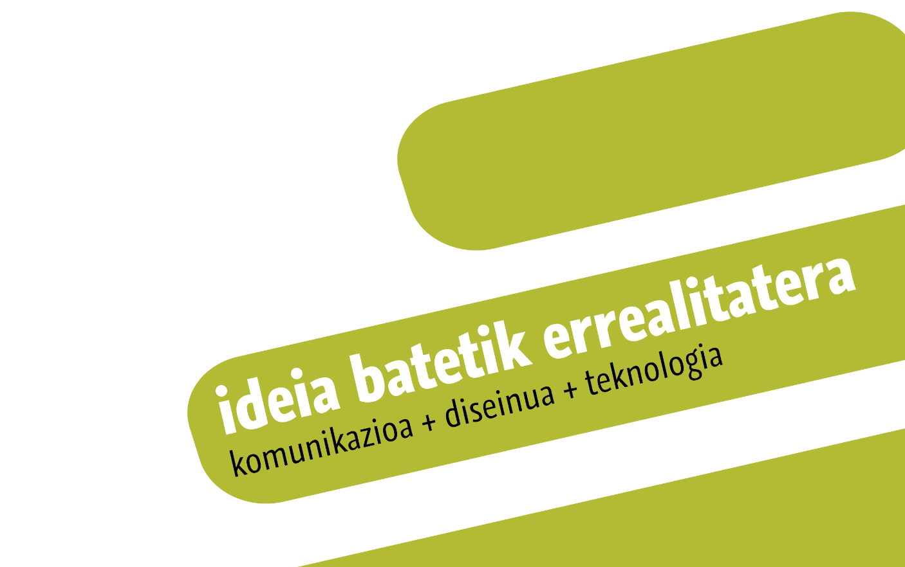
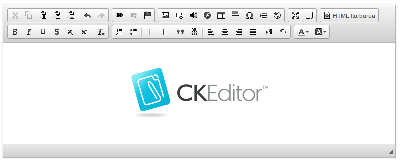

CKEditor webguneetarako testu-editore librea, bere plugin ekosistema eta 'HTML5 audio' pluginaren kasuaren azterketa
Asier Iturralde Sarasola @aldatsa
Software eta Teknologia Librearen III. Euskal Mintegia
2016-11-17
Zer da CKEditor?
CKEditor webguneetan erabiltzen den software libreko testu-editore bat da

FCKeditor-etik CKEditor-era
- Lehen bertsioa 2003an argitaratu zuten FCKeditor izenarekin.
- Izena sortzailearen izenetik dator: Frederico Caldeira Knabben
- Baina ingelesezko FUCK hitzaren antz handia du
- Izen aldaketa: FCKeditor -> CKEditor

Lizentzia
CKEditor GPL, LGPL eta MPL lizentziak erabiliz banatzen da

Garapen eredua
- Hasieratik hasieratik software librea
- CKEditor 3tik aurrera Open Development Effort
- CKEditor-ek hartu beharreko norabidean eta ezaugarri berrien diseinuan komunitatearen iritziak kontutan hartzeko saiakera
- Baina ezaugarri batzuk sekretuan garatu zituzten konpetentziaren beldur
Garapen eredua (II)
- CKEditor 5en garapena erabat publikoa da
- Produktuaren ezaugarrien diseinua Github-eko proiektu bateko issue-tan egindako eztabaida publikoen bidez
- Guztia eztabaidagai publikoki: erabiltzaile interfaze eta erabiltzaile esperientzia, garapeneko erabaki teknikoak (Adb: ES6 erabiltzea), ...
- Erabaki horietan oinarritutako kodea ere publiko

Negozio eredua
- CKEDitor Premium
- CKFinder
- Arreta teknikoa
- Garapen pertsonalizatuak
- Ikuskaritza
- Formazioa
Zer da CKEditor-eko plugin bat
Pluginetan oinarritutako arkitektura
Plugin gordailua
Plugin aipagarriak
CKBuilder
Aurkezpena
Historia
Lizentzia
Itzulpenak
Abuztuko hilabeteko plugina
Check out our CKEditor Add-On of August - Simple HTML5 audio by @aldatsa https://t.co/b4npbs54Sm pic.twitter.com/ozSqK3mFTl
— CKEditor (@ckeditor) 2016(e)ko abuztuak 1
Zin dagit ez geniela ordaindu (I)
.@iametza’s Simple HTML5 audio plugin for @ckeditor should be a model for all CKEditor plugins. Clean & easy. https://t.co/RNu3bLVFTe
— Chris Garaffa (@cmg) 2016(e)ko irailak 16
Zin dagit ez geniela ordaindu (II)
@ckeditor @aldatsa Very vell done! It's really one of the best documented plugins in the repository!
— SmartCore Studio (@smartcorestudio) 2016(e)ko abuztuak 2